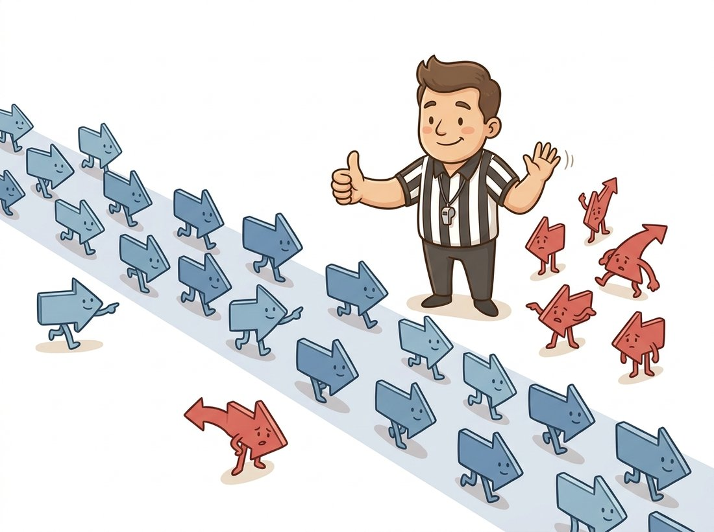

"Four hundred of us pointed at the wrong building, and the algorithm still found the homography. I demand a recount."
A Feature Point That Refused to Match
Registration inverts the warping problem: given two images of the same scene, recover the transform that aligns them. Three families of solutions dominate practice. Phase correlation reads global shifts straight out of the Fourier transform; direct methods such as ECC optimize the transform parameters against pixel intensities; and feature-based methods match distinctive points and fit a model with RANSAC absorbing the inevitable mismatches. Knowing which family fits which problem, and how to pick the transform model from Section 5.1's hierarchy, is what separates a robust alignment pipeline from a demo.
So far in this chapter, someone always handed us the transform: we chose rotation angles, picked corner points, invented distortion coefficients. Production systems rarely enjoy that luxury. A panorama stitcher receives two overlapping photos and must discover the homography between them; a video stabilizer must discover the inter-frame motion; a remote-sensing pipeline must align today's satellite pass with last month's. This estimation problem is image registration, one of the oldest and most economically consequential problems in vision, and it ties the entire chapter together: the hierarchy of Section 5.1 tells us what to estimate, and the warping machinery of Section 5.4 executes whatever we find.
1. Phase Correlation: Alignment From the Fourier Domain Intermediate
For pure translation there is a method of almost unreasonable elegance. The Fourier shift theorem from Chapter 4 says that shifting an image by $(\Delta x, \Delta y)$ multiplies its Fourier transform by a phase ramp $e^{-i2\pi(u\Delta x + v\Delta y)}$ while leaving magnitudes untouched. So if $F_1$ and $F_2$ are the transforms of two shifted copies, the normalized cross-power spectrum isolates exactly that ramp:
$$ R(u, v) \;=\; \frac{F_1(u,v)\, F_2^*(u,v)}{\left|F_1(u,v)\, F_2^*(u,v)\right|} \qquad\Longrightarrow\qquad \mathcal{F}^{-1}\{R\} = \delta(x - \Delta x,\; y - \Delta y) $$The inverse transform of $R$ is, ideally, a single bright spike sitting at the shift. Find the spike, read off the translation; subpixel accuracy comes from fitting the peak's neighborhood. Because the normalization throws away all magnitude information, the method is remarkably immune to global illumination changes, and it considers every pixel at once rather than trusting any local landmark:
# Recover the translation between two images straight from the Fourier
# domain: phaseCorrelate reads the shift off the normalized cross-power
# spectrum, and its peak response doubles as an alignment confidence.
import cv2
import numpy as np
f1 = np.float32(cv2.imread("pass_may.png", cv2.IMREAD_GRAYSCALE))
f2 = np.float32(cv2.imread("pass_june.png", cv2.IMREAD_GRAYSCALE))
# Hanning window suppresses the spectral leakage from image borders
win = cv2.createHanningWindow(f1.shape[::-1], cv2.CV_32F)
(dx, dy), response = cv2.phaseCorrelate(f1, f2, win)
print(f"shift = ({dx:+.2f}, {dy:+.2f}) px, peak response = {response:.3f}")
response value (peak sharpness, 0 to 1) doubles as a confidence score: clean alignments score high, mismatched content scores near zero.shift = (+17.38, -4.92) px, peak response = 0.871
The translation-only limitation has a classical workaround worth knowing: resample the Fourier magnitude spectra to log-polar coordinates, where rotation and scaling become translations, run phase correlation there to recover them, undo them, then run phase correlation again for the shift. This Fourier-Mellin pipeline (OpenCV provides cv2.warpPolar for the resampling) handles the full similarity group of Section 5.1 and is a staple of scan-matching and watermark-detection systems.
2. Direct Methods: ECC Alignment Intermediate
Phase correlation is global and rigid; the next family treats registration as continuous optimization. Direct (intensity-based) methods parameterize a warp $W_\mathbf{p}$ by the entries of a transformation matrix and search for the parameters that make the warped moving image best match the fixed image, descending the gradient of a similarity objective. The standard-bearer in OpenCV is ECC (Evangelidis and Psarakis, 2008), which maximizes the enhanced correlation coefficient, a similarity measure invariant to global brightness gain and bias, so a darker exposure of the same scene still registers cleanly:
# Align two spectral bands by direct intensity optimization: findTransformECC
# refines a warp matrix to maximize the enhanced correlation coefficient,
# which is invariant to brightness gain and bias across the two exposures.
fixed = cv2.imread("band_nir.png", cv2.IMREAD_GRAYSCALE)
moving = cv2.imread("band_red.png", cv2.IMREAD_GRAYSCALE)
warp = np.eye(2, 3, dtype=np.float32) # identity initialization
criteria = (cv2.TERM_CRITERIA_EPS | cv2.TERM_CRITERIA_COUNT, 200, 1e-6)
cc, warp = cv2.findTransformECC(fixed, moving, warp,
motionType=cv2.MOTION_EUCLIDEAN,
criteria=criteria)
print(f"final correlation: {cc:.4f}")
aligned = cv2.warpAffine(moving, warp, fixed.shape[::-1],
flags=cv2.INTER_LINEAR + cv2.WARP_INVERSE_MAP)
motionType selects the rung of Section 5.1's hierarchy to optimize: MOTION_TRANSLATION, MOTION_EUCLIDEAN, MOTION_AFFINE, or MOTION_HOMOGRAPHY.Direct methods have a sharply defined personality. They use every pixel's gradient, so they achieve excellent subpixel accuracy and work on images with no distinctive corners at all (smooth terrain, medical slices, blurry frames). But the optimization is local: start it more than a few dozen pixels from the truth and it converges to the wrong valley. The standard remedy is coarse-to-fine: run ECC on the smallest level of a Gaussian pyramid from Chapter 4, where the basin of convergence is wide, and propagate the result down the levels as initialization. Phase correlation also makes an excellent initializer. When we reach optical flow in Chapter 15, you will recognize Lucas-Kanade as exactly this machinery applied to small patches.
3. Feature-Based Registration and RANSAC Intermediate
The third family is the one inside every panorama app. Instead of comparing all pixels, find a few hundred distinctive points in each image, describe each by a compact signature of its neighborhood, match signatures across images, and fit a transform to the matched pairs. The detection and description machinery (ORB here; SIFT, AKAZE, and learned successors) gets a full treatment in Chapter 10; today we use it as a black box that outputs correspondences, because the interesting part for this chapter is what happens next.
What happens next is that many correspondences are wrong. Repetitive windows match the wrong window; foliage matches other foliage; 10 to 70 percent outlier rates are routine. Least-squares fitting averages outliers into the answer and is destroyed by them. The fix, RANSAC (Random Sample Consensus, Fischler and Bolles, 1981), is one of the most-used algorithms in all of computer vision:
Input: correspondences C, model family with minimal sample size s,
inlier threshold t (px), iterations N
Best := empty
Repeat N times:
1. Draw s correspondences from C at random
(s = 1 translation, 2 similarity, 3 affine, 4 homography)
2. Fit the model exactly to those s pairs
3. Count how many correspondences in C the model maps
within t pixels of their partner: the inlier set
4. If this inlier set is the largest so far, keep it
Refit the model by least squares on the final inlier set
Return model + inlier maskThe minimal sample sizes in step 1 are exactly the "minimum point pairs" column of Table 5.1.1: the hierarchy of Section 5.1 determines how much randomness RANSAC needs.
The logic is probabilistic: a random minimal sample is entirely outlier-free with probability $w^s$ (where $w$ is the inlier fraction), and one clean sample is enough, because the model it generates will be confirmed by all the other inliers. To find at least one clean sample with confidence $p$, you need
$$ N \;=\; \frac{\ln(1 - p)}{\ln(1 - w^s)} $$iterations. The formula just inverts the question, in three short steps. The chance a single draw is not clean is $1 - w^s$. The chance that all $N$ independent draws fail is therefore $(1 - w^s)^N$. Set that failure probability below $1 - p$ and solve for $N$, and the expression above falls out.
Put numbers to it: for $w = 0.5$, $s = 4$, $p = 0.99$, this is about 72 draws, microseconds of work. Figure 5.5.1 shows the geometry of why counting inliers separates the true model from outlier-contaminated fits.
OpenCV bundles the entire loop, including the final least-squares polish, inside cv2.findHomography. A complete feature-based registration pipeline is then short enough to memorize:
# Feature-based registration end to end: detect ORB keypoints, match their
# descriptors, then let findHomography fit a homography with RANSAC so that
# the inevitable wrong matches are discarded as outliers.
img1 = cv2.imread("left.jpg", cv2.IMREAD_GRAYSCALE) # moving
img2 = cv2.imread("right.jpg", cv2.IMREAD_GRAYSCALE) # fixed
orb = cv2.ORB_create(nfeatures=4000)
k1, d1 = orb.detectAndCompute(img1, None)
k2, d2 = orb.detectAndCompute(img2, None)
bf = cv2.BFMatcher(cv2.NORM_HAMMING, crossCheck=True)
matches = sorted(bf.match(d1, d2), key=lambda m: m.distance)[:600]
src = np.float32([k1[m.queryIdx].pt for m in matches]).reshape(-1, 1, 2)
dst = np.float32([k2[m.trainIdx].pt for m in matches]).reshape(-1, 1, 2)
H, inlier_mask = cv2.findHomography(src, dst, cv2.RANSAC,
ransacReprojThreshold=3.0)
n_in = int(inlier_mask.sum())
print(f"RANSAC kept {n_in}/{len(matches)} matches as inliers")
aligned = cv2.warpPerspective(img1, H, img2.shape[::-1])
RANSAC kept 311/600 matches as inliers
The deep lesson of RANSAC is architectural, not algorithmic: do not try to make every measurement correct; make the system indifferent to incorrect measurements. Decades of effort went into better descriptors producing fewer mismatches, and that helps, but the pipeline's reliability comes from the estimator that tolerates 50 percent garbage. You will meet this design philosophy again in pose estimation, in SLAM's loop-closure verification in Chapter 14, and in robust training losses, and it transfers to any system you build that consumes noisy upstream predictions.

4. Choosing a Method, Choosing a Model Beginner
The three families are complements, not competitors. Table 5.5.1 is the decision matrix this book will reuse whenever alignment appears.
| Method | Recovers | Strengths | Fails when |
|---|---|---|---|
| Phase correlation | translation (+ rotation/scale via log-polar) | global, illumination-immune, subpixel, fast | motion beyond similarity; small overlap |
| ECC / direct | any matrix model, subpixel | no features needed; cross-exposure, cross-band | initialization far from truth; large motion without a pyramid |
| Features + RANSAC | any matrix model | huge motions, partial overlap, outlier-immune | textureless or repetitive scenes; extreme appearance gaps |
Orthogonal to method choice is model choice, and here Section 5.1's discipline pays its dividend: fit the smallest family the physics permits. A microscope stage needs translation; a scanning satellite needs similarity or affine; overlapping handheld photos of a facade need a homography. And when the scene has genuine depth parallax between camera positions, no global 2D model is correct: the best homography will align the dominant plane and ghost everything off it, which is the cue to graduate to the epipolar geometry of Chapter 13 or to local deformable models.
The chapter opener promised that stabilization is "the same piece of mathematics" as scanning and stitching, and registration is where you cash that promise. Build a stabilizer that removes camera shake from a handheld clip: read frames with cv2.VideoCapture, estimate the inter-frame motion of each frame relative to the previous one (start with cv2.phaseCorrelate for a pure-translation model, the fastest path from Code 5.5.1), accumulate the shifts into a camera-path trajectory, smooth that trajectory with a moving average, and warp each frame by the difference between the smoothed and raw paths so the residual jitter is cancelled. Beginner, about an hour for the translation-only version on a tripod-ish clip. The advanced build climbs the hierarchy of Section 5.1: swap phase correlation for the feature-plus-RANSAC pipeline of Code 5.5.4 to estimate a full similarity or affine transform per frame, which also corrects roll and zoom, then crop the moving black borders the warp exposes. This is the actual architecture inside the stabilizers in your phone and in editing software, and unlike the panorama lab of Section 5.6 it runs on a video stream rather than a single pair.
Who: A computer-vision engineer at an agritech startup processing drone imagery into crop-health (NDVI) maps.
Situation: The drone's multispectral camera exposes its five spectral bands through five separate lenses a few millimeters apart, so the red and near-infrared images are slightly misaligned at capture.
Problem: NDVI divides the difference of the two bands by their sum, pixel by pixel. With 3-pixel misalignment, every crop-row boundary produced a bright false-stress stripe; agronomists were dispatching scouts to perfectly healthy field edges. The first fix attempt, ORB matching between bands, produced almost no correct matches: the bands' intensities differ so much that descriptors of the same ground point disagree.
Decision: Descriptors compare appearance, but gradient locations are stable across bands. The engineer switched to ECC with MOTION_EUCLIDEAN per band pair, initialized by phase correlation, run coarse-to-fine on a 3-level pyramid.
Result: Residual misalignment dropped below 0.3 pixels; the phantom stress stripes disappeared, along with the wasted scouting trips.
Lesson: Feature descriptors assume the two images look alike. When modality or band differs, direct methods on intensity structure (or mutual information for truly different modalities, built from the joint histograms of Chapter 2) are the right family.
Code 5.5.4 plus exposure compensation, seam finding, multi-band blending, and multi-image bundle adjustment is a few hundred lines of careful work. For the panorama use case, OpenCV ships the entire system:
# For the panorama case OpenCV's Stitcher runs the whole pipeline (matching,
# RANSAC homographies, bundle adjustment, exposure, seams, blending) and
# reports success through a single status code.
stitcher = cv2.Stitcher_create(cv2.Stitcher_PANORAMA)
status, pano = stitcher.stitch([img_a, img_b, img_c])
if status == cv2.Stitcher_OK: cv2.imwrite("pano.jpg", pano)
Roughly 300 lines of pipeline collapse to 3. Internally the stitcher runs feature detection and pairwise matching, RANSAC homographies, a global bundle adjustment that reconciles all pairwise estimates (a preview of Chapter 14), wave-effect correction, exposure compensation, graph-cut seam selection, and multi-band blending using the pyramids of Chapter 4.
Every stage of Code 5.5.4 now has a learned, stronger replacement. SuperPoint descriptors matched by LightGlue (Lindenberger et al., ICCV 2023) became the practical 2024-2026 default for hard wide-baseline pairs, fast enough for real time. RoMa (CVPR 2024) drops the sparse-keypoint abstraction entirely and predicts a dense warp with per-pixel certainty, surviving day-to-night and season changes that break ORB outright. MASt3R (ECCV 2024) goes further still, regressing 3D pointmaps from which correspondences and relative pose both fall out. Robust fitting evolved too: MAGSAC++ (Barath et al., 2020), available as a flag in cv2.findHomography (cv2.USAC_MAGSAC), removes RANSAC's brittle threshold choice and should be your default today. In medical imaging, uniGradICON (Tian et al., MICCAI 2024) markets itself as a foundation model for deformable registration: one network registering across anatomies and modalities. The architecture of the pipeline, correspondences then robust model fitting then warp, has survived every one of these substitutions intact.
RANSAC was invented in 1981 to help a robot cart figure out where it was by matching landmarks, on hardware so modest that the authors agonized over each random draw. The same algorithm, essentially unchanged, now runs inside your phone every time you take a panorama, and modern phones run it a few hundred times per second during capture. Few 1980s SRI technical reports have shipped in two billion consumer devices.
Registration completes the chapter's toolkit: we can now describe transforms, compose them, execute them, and recover them from data. The closing section spends the entire budget at once. We will build a document scanner from scratch, and every stage of it, model selection, corner correspondence, homography estimation, inverse warping, interpolation, will be a tool you can now name. Continue to Section 5.6.
(a) Explain from the DoF-counting argument of Section 5.1 why RANSAC needs 4 point pairs for a homography but only 2 for a similarity transform. (b) Using $N = \ln(1-p)/\ln(1-w^s)$, compute the required iterations at $p = 0.99$ for both models when $w = 0.5$ and when $w = 0.2$. (c) A teammate proposes "improving" robustness by fitting each RANSAC hypothesis to 8 pairs instead of the minimal 4, reasoning that more data gives better models. Explain quantitatively why this usually hurts.
Implement Fourier-Mellin registration for a similarity transform without translation: (1) compute the FFT magnitude of both images (Chapter 4 tools); (2) resample each magnitude with cv2.warpPolar using the WARP_POLAR_LOG flag; (3) run cv2.phaseCorrelate on the two log-polar magnitudes and convert the recovered "shift" into a rotation angle and scale factor; (4) undo the rotation and scale, then recover the translation with a second phase correlation. Validate against synthetic rotations of 5 to 45 degrees combined with scales of 0.8 to 1.25, and report the error of each recovered parameter.
Build a synthetic correspondence set: 200 points transformed by a known homography plus Gaussian noise ($\sigma = 1$ px), contaminated with a controllable fraction of uniformly random outliers. Sweep the outlier fraction from 0 to 0.9 in steps of 0.1 and, for each level, run cv2.findHomography with (a) plain least squares (method 0), (b) RANSAC at threshold 3.0, and (c) cv2.USAC_MAGSAC. Plot the mean reprojection error of each estimator against outlier fraction over 50 trials. Identify the breakdown point of each method and relate the RANSAC curve to the iteration formula from this section.